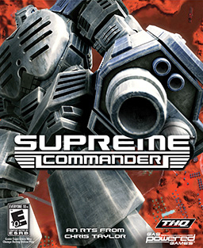

When it comes to being lost in my little world and coming up with ideas for possible future games and some of my little story ideas, there is nothing that brings me greater joy.
When it comes to coding for games or programming, it seems no different than Lego: all the pieces are either here or there, I just need to find them, find out what pieces go where and then put them together to make something new and enjoyable to look at.
As to why I got interested in the programming industry, its mostly because I always had a creative imagination, though I had trouble into how I could get it out into the real world for others to enjoy. Then I turned to video games and realized that in the game world, you could create and be anyone or anything you could want.
While I'm not a 'terrible' artist, I found my prefered course of action in the gaming industry to be with programming and coding. And even though I won't be able to vcreate the visuals to the game, I can still create the concepts of the game and use my skills in coding and programming to help bring the actual game to life.
In terms of my social life, while I do sometimes enjoy the company of others, people have always been a bit of a foreign territory for me. Its not that I don't like people, its that I just have a hard understanding them from time to time and I don't want to seem 'strange' when around them.
When it comes to the interest of games, my tastes vary from different types of genres: from the thrill and excitement of RPGs, to the stratergic and managering systems of Real-Time Stratergy.
Amongst the games that I hold close to my heart, none are as popular or as enjoyable (In my Opinion) than the RTS game Supreme Commander, along with its sequels, and the RPG game series based on the popular manga series One Piece, One Piece: Pirate Warriors.
